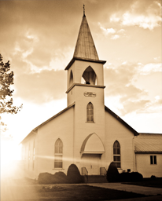

Web Design for History and New Media
Digital History: the application of digital technology to historical studies. This portfolio has been created as part of Hist 697, the second of two required digital history courses in the phd program in History at George Mason University. The course focuses on basic web design skills, such as website building and photoshop proficiency, the goal of which is the ability to create basic digital and web-based resources.
About Me
I am in my first year of the phd program in American history at George Mason, focusing on digital history and on religion and culture in the nineteenth-century. I am particularly interested in the public history potential of digital history, particularly in the field of religious history. To me, this involves more than bringing religious writings online for one, although that is most certainly part. Instead, I hope to bring the tools of geospatial analysis and text-mining to ask questions about the history of religious movements, bringing new tools to bear on many of the standing questions in religious history.